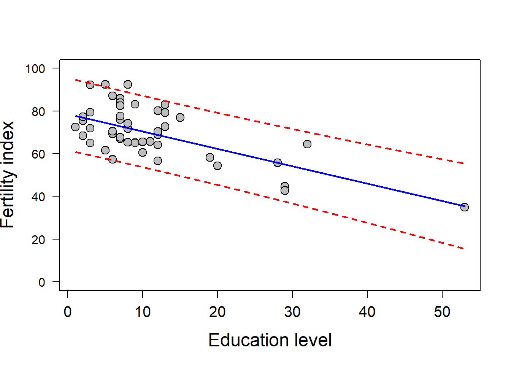
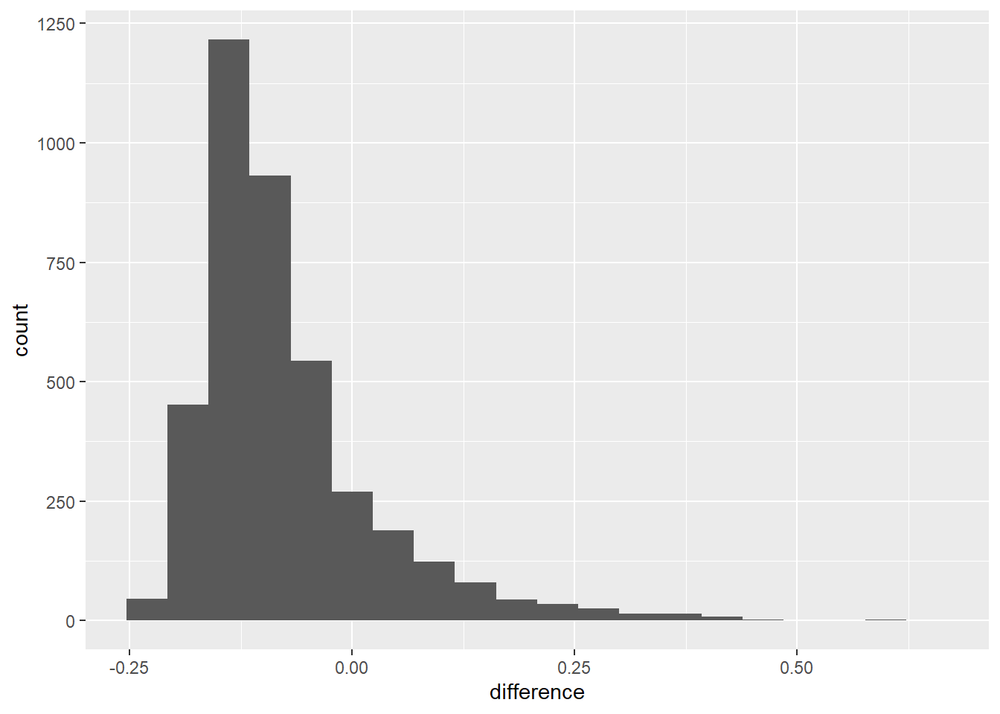
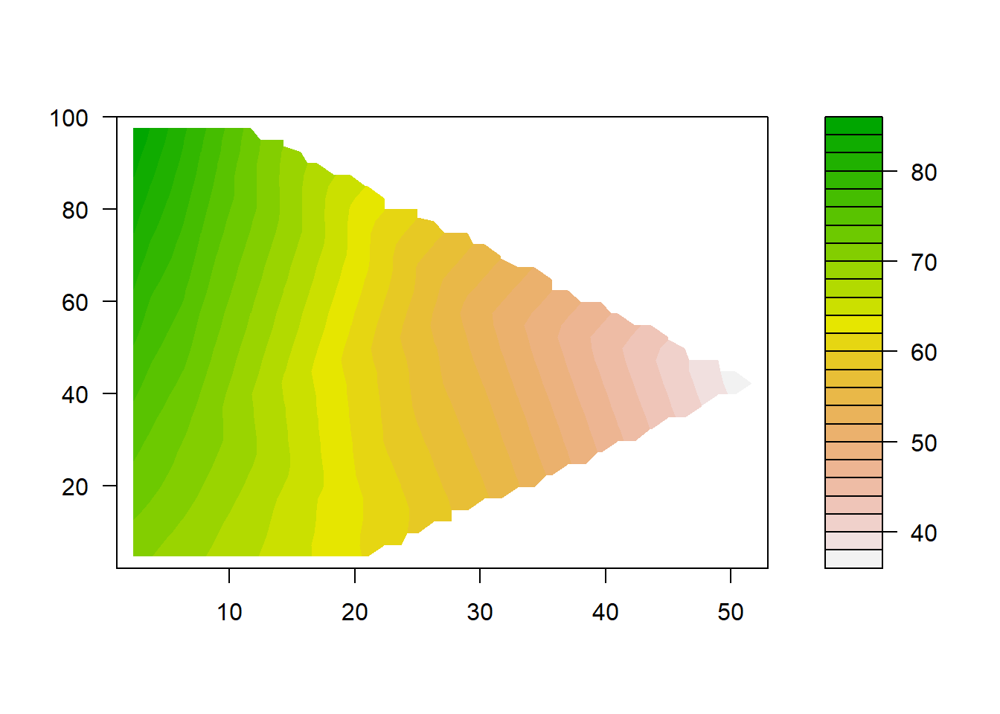
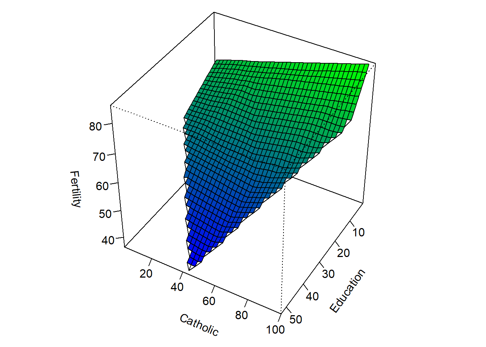

10.5 Multiple regression
Let’s use the swiss data for this one. We start by fitting a model.
Now look at the results.
##
## Call:
## lm(formula = Fertility ~ Education * Catholic, data = swiss)
##
## Residuals:
## Min 1Q Median 3Q Max
## -11.953 -6.319 -1.368 6.380 14.297
##
## Coefficients:
## Estimate Std. Error t value Pr(>|t|)
## (Intercept) 70.937553 3.106471 22.835 < 2e-16 ***
## Education -0.427637 0.260176 -1.644 0.10754
## Catholic 0.184003 0.054539 3.374 0.00158 **
## Education:Catholic -0.009380 0.005904 -1.589 0.11942
## ---
## Signif. codes: 0 '***' 0.001 '**' 0.01 '*' 0.05 '.' 0.1 ' ' 1
##
## Residual standard error: 8.191 on 43 degrees of freedom
## Multiple R-squared: 0.5981, Adjusted R-squared: 0.5701
## F-statistic: 21.33 on 3 and 43 DF, p-value: 1.286e-08Make the coefficients into a dataframe.
The thing that’s confusing about multiple continous predictors is how to simulate new data used in predictions if there is any colinearity between the explanatory variables.
So, we can do one of two things.
1. We can make predictions one variable at a time and hold the others constant at their means.
2. We can make predictions based on our original data
First, let’s consider the case of making predictions from a single continuous explanatory variable (‘covariate’) at a time.
Start with Education since we’ve already done it.
# Make new values of Education across
# the range of observed values
ednew <- seq(from=min(swiss$Education),
to=max(swiss$Education),
by=0.01)
# Make a column of mean for level of Catholocism
cathnew <- rep(mean(swiss$Catholic), length(ednew))
# Combine them into a dataframe
# for use in predict function and assign names
new <- data.frame(ednew, cathnew)
names(new) = c('Education', 'Catholic')
# Use the predict function to predict
# new values of fertility based on
# education holding catholic constant
# at the mean value
edpred <- predict(smod, new, interval='prediction')
# Plot the raw data
par(mfrow=c(1,1))
plot(swiss$Education, swiss$Fertility,
ylab='Fertility index',
xlab='Education level',
pch=21, bg='gray', cex=1.5, ylim=c(0, 100),
cex.lab=1.5, cex.axis=1.25, yaxt='n')
axis(side = 2, las = 2)
# Now plot the mean prediction line
lines(new$Education, edpred[,1], col='blue', lwd=2)
lines(new$Education, edpred[,2], col='red', lwd=2, lty=2)
lines(new$Education, edpred[,3], col='red', lwd=2, lty=2)
This should look familiar…
Second, we can do the same for Catholic holding Education constant at the mean observed value.
# Make new values of Education
# across the range of observed values
cathnew <- seq(from=min(swiss$Catholic),
to=max(swiss$Catholic),
by=0.01)
# Make new column repeating the
# mean of Education across observations
ednew <- rep(mean(swiss$Education), length(cathnew))
# Combine them into a dataframe for
# use in predict function and assign names
new <- data.frame(ednew, cathnew)
names(new) <- c('Education', 'Catholic')
# Use the predict function to predict
# new values of fertility based on
# education holding catholic constant at the mean value
cathpred <- predict(smod, new, interval='prediction')
# Plot the raw data
plot(swiss$Catholic, swiss$Fertility,
ylab='', xlab='Percent Catholic',
pch=21, bg='gray', cex=1.5, ylim=c(0, 100),
cex.lab=1.5, cex.axis=1.25, yaxt='n')
axis(side = 2, las = 2)
# Now plot the mean prediction line
lines(new$Catholic, cathpred[,1], col='blue', lwd=2)
lines(new$Catholic, cathpred[,2], col='red', lwd=2, lty=2)
lines(new$Catholic, cathpred[,3], col='red', lwd=2, lty=2)
This looks a little different.
Here are some tricks we can use to visualize effects of 2 continuous variables at the same time.
# Predictions from original data
swpred <- predict(object = smod,
newdata = swiss,
interval = 'prediction')
# Load the akima library after installling
#install.packages('akima')
library(akima)
# Make a dataframe out of the
# explanatory variables and predictions
persp.test <- data.frame(x=swiss$Education, y=swiss$Catholic, z=swpred[,1])
# Order the dataframe so we
# have increasing values of x and y
persp.test=persp.test[with(persp.test, order(x, y)), ]
# Do an interpolation to get predictions
# over a grid of x and y values using
# the 'interp' function out of the akima package
im <- with(persp.test, interp(x, y, z, duplicate='mean', extrap=FALSE))Now we can use the default graphics to make some pretty fancy plots once we have interpolated our predictions across a grid of observed explanatory variables.
First, we can make a two-dimensional, colored contour plot with filled.contour:

Now how about a 3D contour plot? Sweet mother of swiss, these things are freakin awesome.
# Make the data into a usable form
Education <-im$x
Catholic <- im$y
Fertility <- im$z
nrz <- nrow(Fertility)
ncz <- ncol(Fertility)
# Create a function interpolating colors in the range of specified colors
jet.colors <- colorRampPalette( c("blue", "green") )
# Generate the desired number of colors from this palette
nbcol <- 100
color <- jet.colors(nbcol)
# Compute the z-value at the facet centres
zfacet <- Fertility[-1, -1] + Fertility[-1, -ncz] +
Fertility[-nrz, -1] + Fertility[-nrz, -ncz]
# Recode facet z-values into color indices
facetcol <- cut(zfacet, nbcol)
# Now make a sweet freakin' graph
par(mar=c(1.5,1,0,1), mfrow=c(1,1))
persp(Education, Catholic, Fertility,
col = color[facetcol],
phi = 40,
theta = 120,
scale=TRUE,
box=TRUE,
ticktype='detailed',
border=NULL,
r=10,
xlab='\n\nEducation',
ylab='\n\nCatholic',
zlab='\n\nFertility'
)